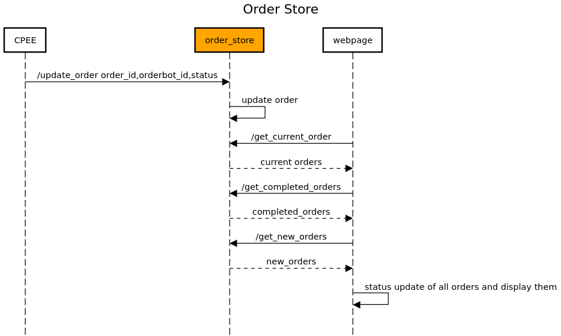

Order Store¶
The
order_storemodule provides a way to keep track of the state of an order. It offers methods that can be called from the CPEE to update the state of the order. The state of the order is stored on a thread safe que. Also it provides getter methods to get the state of the order which is used by the Website to display the states of the orders to the user.The figure below shows the high-level architecture of the
order_storemodule: The order store is the interface between the CPEE and the website. The CPEE sends the order state to the order store and the website gets the order state from the order store.The
order_storesupports a RESTful API implemented using Flask. See below for detailed documentation of its API endpoints and functionality.API Endpoints:
Update Order Status:
URL:
/update_order(configured viaconf_order_store.URL_UPDATE)Method:
PUTDescription: Updates the status of an order based on the provided order ID, orderbot ID, and new status. The endpoint accepts both JSON and form-encoded request bodies.
Request Fields:
When sending form-encoded data:
order_id: The ID of the order to update.
orderbot_id: The ID of the orderbot associated with the order.
status: The new status of the order.When sending JSON data:
id: The ID of the order to update.
orderbot_id: The ID of the orderbot associated with the order.
status: The new status of the order.
Example request with JSON data:
PUT /update-order HTTP/1.1 Host: example.com Content-Type: application/json { "id": 1, "orderbot_id": "123", "status": "Processing" }Success Response:
HTTP/1.1 200 OK Content-Type: application/json { "message": "Order updated" }Error Response:
If the request is missing required data:
HTTP/1.1 400 Bad Request Content-Type: application/json { "error": "Missing data" }Get All Orders:
URL:
/get_all(configured viaconf_order_store.URL_GET_ALL)Method:
GETDescription: Retrieves a list of all orders, useful for debugging purposes.
Success Response:
HTTP/1.1 200 OK Content-Type: application/json [ { "order_id": 1, "status": "Processing", "orderbot_id": "123" }, "..." ]Get Current Orders:
URL:
/get_current_order(configured viaconf_order_store.URL_GET_CURRENT)Method:
GETDescription: Fetches orders that have not yet been served and are currently in progress.
Success Response:
HTTP/1.1 200 OK Content-Type: application/json { "incomplete_orders": [ { "id": 1, "orderbot_id": "123", "status": "Processing" }, "..." ] }Get Completed Orders:
URL:
/get_completed_orders(configured viaconf_order_store.URL_GET_COMPLETED)Method:
GETDescription: Retrieves orders that have been marked as served.
Success Response:
HTTP/1.1 200 OK Content-Type: application/json { "completed_orders": "[1, 2, 3, ...]" }Get New Orders:
URL:
/get_new_orders(configured viaconf_order_store.URL_GET_NEW)Method:
GETDescription: Fetches orders that have been initiated but not yet started or served.
Success Response:
HTTP/1.1 200 OK Content-Type: application/json { "new_orders": "[4, 5, 6, ...]" }Module Implementation:
- order_store.get_all()¶
Get all the orders (for debugging purposes) :return: A list of all the orders
- order_store.get_completed_orders()¶
Get the orders that have been served :return: A list of the completed orders
- order_store.get_current_order()¶
Get the current orders that are not served yet :return: A list of the current orders
- order_store.get_new_orders()¶
Get the orders that have been initiated but not served and not yet started :return: A list of the new orders
- order_store.get_order_status(id)¶
Get the status of an order :param id: The order id :return: The status of the order
- order_store.update_order()¶
Update the status of an order, given the order id, orderbot_id and the new status (in the request body) :return: A message indicating the status of the update